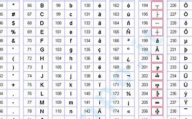

üî§ Codifica ASCII
L'ASCII (American Standard Code for Information Interchange) è un sistema di codifica dei caratteri utilizzato per rappresentare testo nei computer e nei dispositivi elettronici. Questo sistema assegna un valore numerico univoco a ciascun carattere, permettendo la comunicazione tra diversi sistemi informatici. Ad esempio, la lettera 'A' è rappresentata dal numero 65 in codice decimale, mentre lo spazio è rappresentato dal numero 32. ASCII supporta caratteri alfabetici, numerici e simboli di punteggiatura, ma ha dei limiti in quanto non include caratteri di alfabeti non latini.
ASCII (acronimo di American Standard Code for Information Interchange) è un codice per la codifica di caratteri.Consiste in un insieme di 128 caratteri, ognuno rappresentato da un valore numerico,
che permette di scrivere e visualizzare testo su computer e dispositivi elettronici.
È diviso in 3 numeri per ogni lettera della tastiera.

üî¢ Codifica dei Numeri
Nel mondo digitale, i numeri vengono rappresentati attraverso diversi sistemi di codifica:
- Binario: Il sistema numerico base dei computer, che utilizza solo i simboli 0 e 1. Ad esempio, il numero decimale 5 è scritto in binario come 101.
- Complemento a due: Metodo per rappresentare numeri interi negativi, molto usato nell’aritmetica dei computer per semplificare le operazioni matematiche.
- Virgola mobile: Un formato avanzato per rappresentare numeri con decimali. Grazie a questo sistema, è possibile gestire sia numeri molto grandi che molto piccoli senza perdere precisione.
e delle regole che assegnano uno ed un solo significato ad ogni scrittura formata coi simboli stessi.
I simboli di un sistema di numerazione prendono il nome di cifre.
üñºÔ∏è Codifica delle Immagini
Le immagini digitali sono rappresentate attraverso una griglia di pixel, dove ogni pixel ha un colore specifico. Il colore è codificato attraverso modelli come:
- RGB: Utilizza tre canali di colore (rosso, verde, blu) per rappresentare ogni pixel, combinandoli in diverse intensità.
- CMYK: Usato principalmente nella stampa, utilizza i colori ciano, magenta, giallo e nero.
- Grayscale: Rappresenta immagini in scala di grigi, utilizzando valori che vanno dal nero al bianco.
Siccome i pixel sono molto piccoli,
guardando l'immagine a grandezza naturale non ci si accorge di questo fatto. Se però si effettua un
ingrandimento abbastanza elevato, i pixel diventano evidenti.
vengo suddivise in base x altezza per esempio:1024x768x32 o, più correttamente, 1024x768x32bit
dove l’ultimo numero indica la profondità di colore in bit.
üéµ Codifica dell'Audio
L’audio digitale è una rappresentazione numerica di onde sonore analogiche. Il processo di digitalizzazione dell’audio include:
- Campionamento: Registrazione del suono a intervalli regolari (es. 44.1 kHz per i CD).
- Quantizzazione: Assegnazione di valori numerici ai campioni registrati.
Formati comuni per la codifica audio includono MP3 (compressione con perdita), WAV (qualità non compressa) e AAC (ottimizzato per lo streaming).
Il formato audio PCM o Pulse Code Modulation è una rappresentazione digitale di un insieme di segnali audio che si trovano allo stato grezzo.Per registrare questo suono analogico è necessario catturare e poi selezionare le onde sonore a determinati intervalli,
per poi trasformarle in bit digitali.
 ⬅ Torna all'Indice
⬅ Torna all'Indice